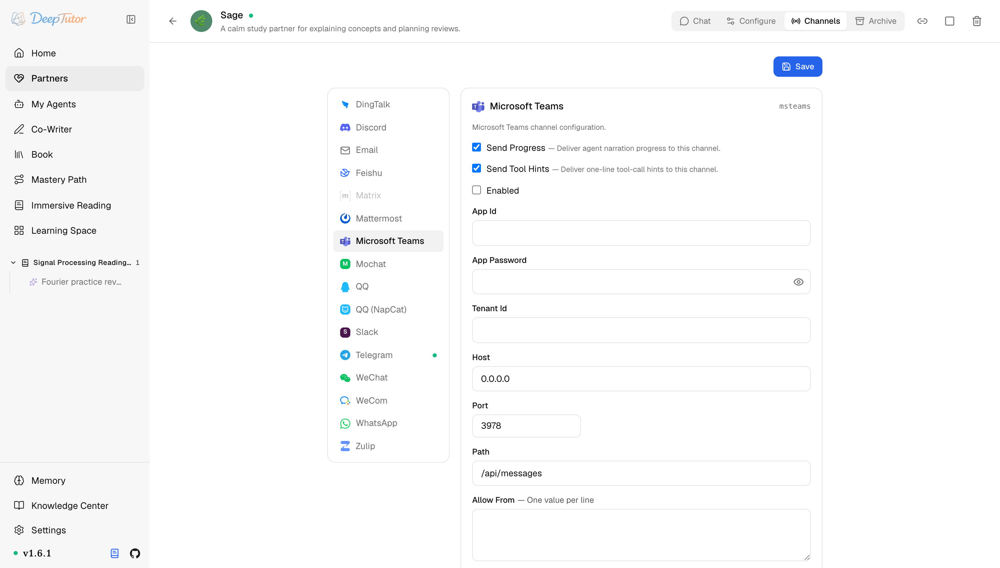

夥伴與管道Microsoft Teams
DeepTutor 接入 Microsoft Teams 教學！Azure 註冊 6 步搞定，3978 連接埠掛上對外網路就能聊！｜零度解說
為 Partner 設定 Microsoft Teams 管道——Azure Bot 註冊、對外網路 messaging endpoint、入站 JWT 驗證。
原文連結：https://docs.deeptutor.info/zh-cn/partners/msteams/
大公司用 Microsoft Teams 辦公的朋友，這篇是給你準備的。
msteams 管道透過 Bot Framework 把 AI 學習夥伴（Partner）接到 Microsoft Teams。但是問題來了：它和 DeepTutor 其他所有管道都不一樣，不是主動外連，它內建了一個小型 HTTP 伺服器（預設 0.0.0.0:3978，路徑 /api/messages），由微軟的伺服器把每條訊息 POST 過來。
所以你需要一個對外網路可達的 HTTPS endpoint：生產環境在連接埠前面架一層反向代理（nginx、Caddy、Cloudflare Tunnel 都行），再把 Azure Bot 的 messaging endpoint 指過來。本機測試用 ngrok http 3978 這類隧道就夠了。
還有一個容易翻車的點：每個啟用 Teams 的 Partner 都必須使用獨立 bind port。 每個 Partner 會啟動自己的 HTTP 伺服器，因此同一主機上的兩個 Teams 管道不能共用同一組 host/port，請把每個 Partner 的對外網路 messaging endpoint 分別轉發到它自己的連接埠。
當前能力範圍以私聊為主：文字進、文字出。群聊和頻道訊息會被忽略，附件暫不支援。

Partner 執行起來之後，先看卡片即時狀態：Listener running 表示網路鉤子（webhook）伺服器已綁定，失敗狀態會在查日誌前指出連接埠或設定問題。
一、安裝依賴
Teams 支援已包含在 Partners 可選元件（extras）裡。入站請求用 PyJWT[crypto] 做驗證，它也已經在內，不需要額外安裝任何東西：
pip install -e ".[partners]"
# 或发布包支持 extras 时：
pip install "deeptutor[partners]"官方入口：
二、在 Azure 註冊機器人
- 在 Azure Portal 開啟 Microsoft Entra ID -> App registrations -> New registration 。起個名字，選好帳戶類型（單租戶即可），完成註冊。複製 Application (client) ID ——這就是 App Id ；再複製 Directory (tenant) ID ——這就是 Tenant Id 。
- 在這個註冊下開啟 Certificates & secrets -> New client secret ，立刻複製 secret 的 Value（只顯示這一次），這就是 App Password 。
- 建立一個 Azure Bot 資源（在 marketplace 裡搜 "Azure Bot"）。 Microsoft App ID 選 Use existing app registration ，填入你的 App Id。租戶類型要和註冊保持一致：單租戶的註冊就建單租戶的 bot。
- 在 bot 資源裡進 Settings -> Configuration ，把 Messaging endpoint 設成你的對外網路 HTTPS 地址，結尾必須是管道的路徑，比如
https://bots.example.com/api/messages。 - 進 Settings -> Channels ，新增 Microsoft Teams channel。
- 想直接開聊，點 Teams channel 那一行的 Open in Teams 連結；要在組織內分發，就打一個引用同一 App Id 的 Teams 應用 manifest 包。
三、設定管道卡片（channel card）
開啟 Partners -> 你的 partner -> Channels -> Microsoft Teams。
| 欄位 | 怎麼填 |
|---|---|
| Send Progress | 測試時建議開啟。長任務會把過程解說（narration）即時發過來。 |
| Send Tool Hints | 除錯時建議開啟；不想讓使用者看到一行工具呼叫就關掉。 |
| Enabled | 準備啟動管道時再開啟。 |
| App Id | App registration 的 Application (client) ID。同時也是驗證入站 JWT（一種簽章驗證權杖）時要求的 audience。 |
| App Password | client secret 的 Value。按 secret 儲存，儲存後會遮罩顯示。 |
| Tenant Id | Directory (tenant) ID。單租戶註冊必填；只有多租戶 bot 才能留空。 |
| Host | 內建 HTTP 伺服器的監聽地址。預設 0.0.0.0 監聽所有網路卡；如果只有本機的反向代理來訪問，可以收緊到 127.0.0.1 。 |
| Port | 監聽連接埠。預設 3978 ，Bot Framework 的慣例連接埠。同一主機上所有已啟用的 Teams Partners 必須各用一個不同連接埠。 |
| Path | 接收訊息的 URL 路徑。預設 /api/messages ，必須和 messaging endpoint 的結尾一致。 |
| Allow From | 一行一個值。測試可填 * ；正式用換成 Microsoft Entra object id——被拒的 sender id 會打在 partner 日誌裡。空列表會拒絕所有人。 |
| Reply In Thread | 開啟（預設）時，回覆會掛在觸發它的那條訊息下面，而不是另起一條。 |
| Mention Only Response | 訊息裡除了 @ 機器人什麼都沒有時，機器人回的那句話。 |
| Validate Inbound Auth | 保持開啟。每個入站請求都驗證 Bot Framework JWT（用微軟公開的金鑰做 RS256 驗簽，audience 必須等於 App Id）。關掉它意味著任何拿到 URL 的人都能冒充任意使用者跟 partner 說話——只限本機測試。 |
| Ref Ttl Days | 閒置的會話引用（conversation reference）保留多少天後清理。預設 30 。 |
| Prune Web Chat Refs | 把 Bot Framework Web Chat 的會話從儲存裡剔除（Web Chat 不支援）。 |
| Prune Non Personal Refs | 把群聊/頻道的會話引用剔除；管道目前只做私聊。 |
| Ref Touch Interval S | 活躍會話引用的時間戳重新整理最小間隔（秒）。預設 300 。 |
| Trusted Service Url Hosts | 接受並回復的 Bot Framework 服務網域白名單。預設覆蓋公有雲和 GCC/DoD 政府雲——除非微軟把你路由去了別處，否則不用動。 |
四、儲存之後
- 點 Save ，把 Enabled 開啟。
- 啟動 partner（已在執行的話重新啟動，或在 Channels 面板上用 reload）。
- 從外網驗證 endpoint 可達：
curl -X POST https://your-domain/api/messages -H 'Content-Type: application/json' -d '{}'應該回傳 401（JWT 驗證把你攔下來了）；如果是連線錯誤，說明代理鏈路有問題。 - 用允許的帳號在 Teams 裡開啟機器人（ Open in Teams 連結），私聊發一條短訊息。
- 在日誌裡確認 sender id 之後，把 Allow From 裡的
*換成真實 id。
如何確認健康
- 啟動日誌出現
MSTeams webhook listening on http://0.0.0.0:3978/api/messages。 - 向對外網路 endpoint 發一個不帶憑證的 POST 回傳 401 而不是逾時：代理鏈路通了，JWT 門也立著。
- 允許的帳號私聊能收到回覆，並出現
data/partners/<partner-id>/channels/msteams/msteams_conversations.json，會話引用在正常持久化。
常見問題
Teams 提示訊息傳送失敗
messaging endpoint 不可達。確認 endpoint URL 以你設定的 Path 結尾、HTTPS 憑證有效、反向代理轉發到了 Host:Port。用上面清單裡那條 curl 一步就能定位。
所有入站請求都被 401 拒絕
入站 JWT 驗證沒過。最常見的原因是管道卡片裡的 App Id 和 bot 註冊對不上，token 的 audience 必須等於 App Id。如果最近重建過註冊，記得更新卡片。除了本機測試，不要用關閉 Validate Inbound Auth 來繞過這個問題。
回覆時報 token 錯誤
收得到但發不出，這是租戶的坑：單租戶註冊卻把 Tenant Id 留空，DeepTutor 會去多租戶 endpoint 換 token，微軟直接拒絕。把 Tenant Id 填成 Directory (tenant) ID 再儲存即可。
私聊正常但群聊和頻道不理人
設計如此：管道目前只做私聊。非私聊會話到達即丟棄（ Prune Non Personal Refs 開著時，儲存裡的會話引用也會被清掉）。
相關頁面
- Channel Matrix — 所有 channel 一覽
- WeCom — 企業微信接入，另一種企業 IM 路線
部署過程遇到問題，歡迎在留言區留言，把報錯的完整日誌貼出來，我看到會回覆。